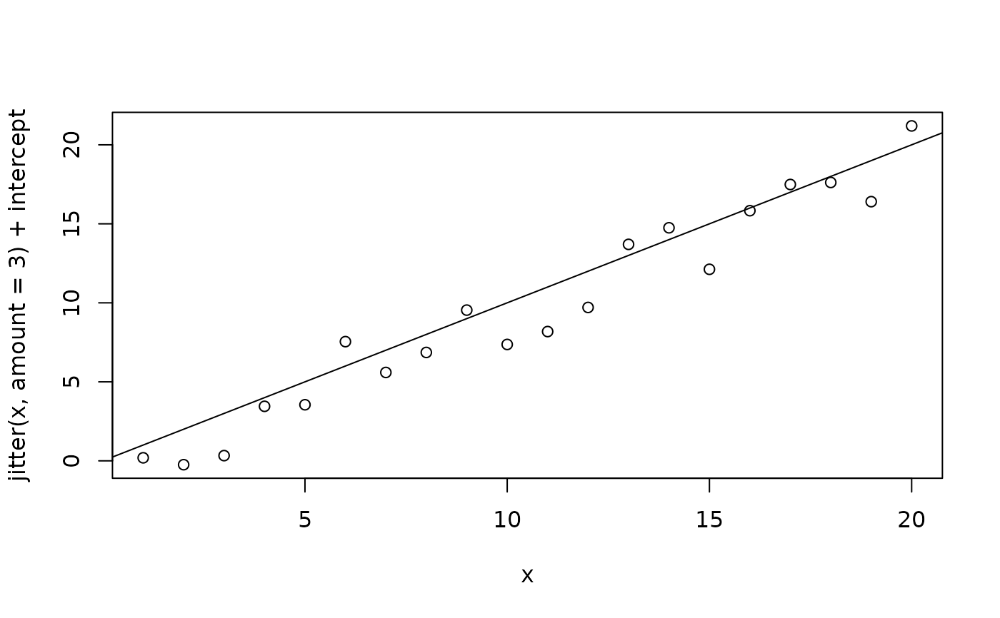

Python-style decorator
Examples
# Example 1: basic usage
# Decorator that prints summary of results and return results itself
verbose_summary <- function(...){
summary_args <- list(...)
function(f){
function(...){
results <- f(...)
print(do.call(
summary,
c(list(results), summary_args)
))
results
}
}
}
# runs as.list, but through verbose_summary
as_list2 <- decorate_function(as.list, verbose_summary)
# run test
res <- as_list2(1:3) # will verbose summary
#> Length Class Mode
#> [1,] 1 -none- numeric
#> [2,] 1 -none- numeric
#> [3,] 1 -none- numeric
identical(res, as.list(1:3))
#> [1] TRUE
# Example 2
x <- 1:20
y <- x + rnorm(20)
# decorator, add a line with slope 1 with given intercept
abline_xy <- function(b){
function(f){
function(...){
f(...)
intercept <- get_dots('intercept', 0, ...)
abline(a = intercept, b = b)
}
}
}
# orig, plot whatever x vs jittered+intercept
plot_xy <- function(x, intercept = rnorm(1)){
plot(x, jitter(x, amount = 3) + intercept)
}
# new function that decorate plot_xy with abline_xy, and
# returns the intercept
plot_xy2 <- decorate_function(plot_xy, abline_xy, b = 1)
# alternatively, you might also want to try
plot_xy2 <- plot_xy %D% abline_xy(b = 1)
plot_xy2(x = 1:20)
